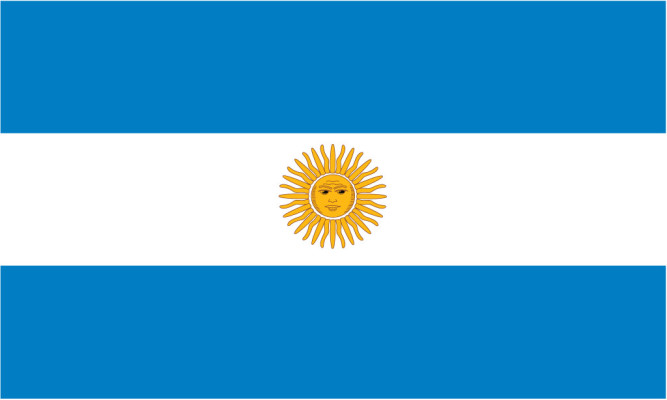

아르헨티나

아르헨티나 공화국(아르헨티나 共和國, 스페인어: República Argentina 레푸블리카 아르헨티나[*], 과라니어: Tetã Argentina)[1]
줄여서 아르헨티나(스페인어: Argentina 아르헨티나[*], 문화어: 아르헨띠나)는 남아메리카 대륙 남부에 자리 잡고 있으며,
23개의 주와 자치시 1개로 구성된 연방 공화국이다. 주요 도시로는 부에노스아이레스, 코르도바, 바이아블랑카, 마르델플라타, 라플라타 등이 있다.
동쪽의 대서양과 서쪽의 안데스 산맥 사이에 2,766,890 km²의 면적을 차지하고 있으며 남아메리카에서 브라질에 이어 두 번째로 넓으며,
세계에서 여덟 번째로 큰 나라이다. 또한 스페인어 사용국가 중 가장 큰 나라이며,
백인 인구가 국가 인구의 다수를 차지하는 나라로, 수도는 부에노스아이레스다.
세계은행에서 이 나라를 국민총소득 중상 수준의 국가 혹은 신흥 시장으로 분류했다.
아르헨티나는 메르코수르, 남미 국가 연합, 세계은행 그룹, G-15, G-20에 속하는 나라이기도 하다.
그러나 지속되고 있는 경제적 위기로 인해 경제적 악화가 반복되고 있다.